Appendix: KENYA NATIONAL EXAMINATION COUNCIL PAST PAPERS
📄2521/202 INDUSTRIAL CONTROL SYSTEMS - June/July 2013
Question 6
a) i) State the four steps in the operation of programmable logic controller (PLC)
There are four basic steps in the operation of all PLCs; Input Scan Program Scan, Output Scan, and Housekeeping. These steps continually take place in a repeating loop.
Input Scan: Detects the state of all input devices that are connected to the PLC
Program Scan: Executes the user created program logic
Output Scan: Energizes or de-energize all output devices that are connected to the PLC.
Housekeeping: Operational commands to the controlled devices. This step includes communications with programming terminals, internal diagnostics, etc...
ii) Explain with aid of examples the following PLC programming languages
(i) Function Block Diagram (FBD) - A graphical language for depicting signal and data flows through re-usable function blocks. FBD is very useful for expressing the interconnection of control system algorithms and logic
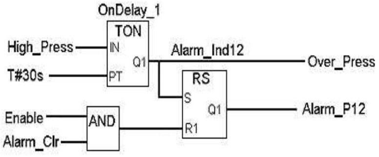
FBD Example
(ii) Ladder Diagram (LD): Traditional ladder logic is graphical programming language. Initially programmed with simple contacts that simulated the opening and closing of relays, Ladder Logic programming has been expanded to include such functions as counters, timers, shift registers, and math operations
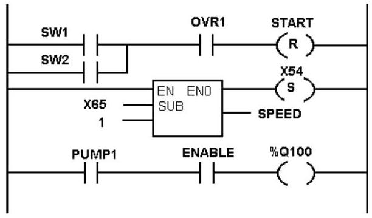
LD Example
(iii) Instruction List (IL): A low level "assembler like" language that is based on similar instructions list languages found in a wide range of today's PLCs.
LD R1
MPC
RESET:
LD PRESS_1
ST MAX_PRESS
RESET: LD 0
ST A_X43
(iv) Structured Text (ST) - A high level text language that encourages structured programming. It has a language structure (syntax) that strongly resembles PASCAL and supports a wide range of standard functions and operators. For example;
If Speed1 > 100.0 then
Flow_Rate: = 50.0 + Offset_A1;
Else
Flow_Rate: = 100.0; Steam: = ON
End_If;
Sequential Function Chart (SFC): A method of programming complex control systems at a more highly structured level. A SFC program is an overview of the control system, in which the basic building blocks are entire program files. Each program file is created using one of the other types of programming languages. The SFC approach coordinates large, complicated programming tasks into smaller, more manageable tasks.
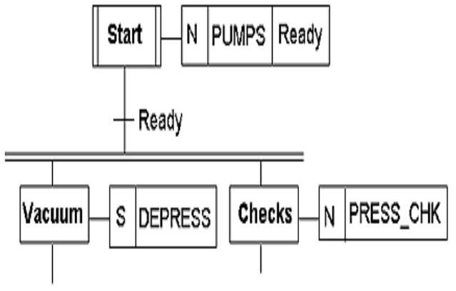
SFC Example
b) Write an instruction list for the ladder diagram provided in fig below
(Figure for 6b not provided in MMD, assuming it was part of the original exam paper)
c) Design a ladder program for an industrial control system that:
-counts ten objects passing along a conveyer belt;
-closes a deflecting gate when that number has been deflected into a carton;
-Allows a time of 5 seconds between the tenth object counted and the closing of the deflector.
(Ladder program solution not provided in text)
Question 7
a) Describe the following components used in a SCADA system
i) Remote Terminal unit (RTU) ii) Human Machine Interface (HMI)
A SCADA system usually consists of the following components:
(i) Remote Terminal Unit (RTU):- RTU is a device installed at a remote location that collects data, codes the data into a format that is transmittable and transmits the data back to a central station, or master (supervisory system). An RTU also collects information from the master device and implements processes that are directed by the master
(ii) A human-machine interface or HMI is the apparatus or device which presents processed data to a human operator, and through this, the human operator monitors and controls the process. The HMI of a SCADA system is where data is processed and presented to be viewed and monitored by a human operator. This interface usually includes control where the individual can interface with the SCADA system
(iii)A supervisory (computer) system/ Master Terminal Unit (MTU):- gathering (acquiring) data on the process and sending commands (control) to the process. This is the servers and software responsible for communicating with the field equipment (RTUs, PLCs, etc), and then to the HMI software running on workstations in the control room, or elsewhere.
(iv)Programmable logic controller (PLCs) used as field devices because they are more economical, versatile, flexible, and configurable than special-purpose RTUs.
(v) Communication Network: Communication infrastructure connecting the supervisory system to the remote terminal units. The communication equipment needed to transfer the data to and from different sites to the central station. The medium used can either be cable or telephone. Remotes are usually not Accessible by telephone lines. The use of radio offers an economical solution. Modems are used to connect the remote sites to the host.
(vi)Field Instrumentation: refers to the devices that are connected to the equipment or machines being controlled and monitored by the SCADA system .These are sensors for monitoring certain parameters; and actuators for controlling certain modules of the system.
b) Explain the following strategies used to develop SCADA security
i) Border router Firewalls ii) Proxy server
(i) Border router is a router that is usually deployed in front of the organization's main firewalls and performs some basic checks on network activity, such as ingress and egress filtering that may be helpful in stopping some Internet-based worms from reaching the organization's firewall. Although the firewall should also block such worms, having the Internet border routers do so can take some load off the firewall. During a major worm incident, organizations might need to reconfigure some of their Internet border routers to block incoming worm activity so that the firewalls do not become overloaded.
(ii) Proxy server is a server (a computer system or an application) that acts as an intermediary for requests from clients seeking resources from other servers. A client connects to the proxy server, requesting some service, such as a file, connection, web page, or other resource available from a different server and the proxy server evaluates the request as a way to simplify and control its complexity. A proxy server is associated with or part of a gateway server that separates the enterprise network from the outside network and a firewall server that protects the enterprise network from outside intrusion. Proxy servers have two main purposes:
•Improve Performance: Proxy servers improve performance for groups of users. This is because it saves the results of all requests for a certain amount of time.
•Filter Requests: Proxy servers can also be used to filter requests. For example, a company might use a proxy server to prevent its employees from accessing a specific set of Web sites.
c) A manufacturing company wants to develop a supervisory control and data acquisition (SCADA) system in its establishment. Describe the five phases of creating a functional SCADA system.
Phase 1: The DESIGN of the system architecture includes the communication system. Also involved in this initial phase will be any site instrumentation that is not currently in existence, but will be required to monitor desired parameters. Design stage translate the design basis document into a system design and document the design clearly and completely so that it can be constructed properly, commissioned completely, and operated and maintained reliably and efficiently.
Phase 2: The SUPPLY of RTU, communication, and HMI equipment, which consists of a PC system and the required powerful graphic and alarm software programs.
Phase 3: The PROGRAMMING of the communication equipment and the powerful HMI graphic and alarm software programs.
Phase 4: The INSTALLATION of the communication equipment and the PC system. The stage involves installing and placing into operation the SCADA system hardware and software in compliance with the design documents.
Phase 5: The COMMISSIONING of the system, where communication and HMI programming problems are solved, and the system is proven to the client, and operator training and system documentation is provided. Commissioning is the formal process of verifying and documenting that the installed SCADA system complies with and performs in accordance with the design intent, as defined in the design documentation
Question 8
a) State any two disadvantages of using network bridges in extending networks
Bridging does not acquire any address placement related to the physical address of the connected terminals. Thus a data packet is sent to every address.
All bridges are unable to read specific IP address; they are more concerned with the MAC addresses.
Bridges cannot help to build a communication network between the networks of different architectures.
Bridges transfer all types of broadcast messages, thus bridges are unable to limit the scope of these messages.
Extremely large networks cannot rely on bridges; therefore the large networks as WAN which are IP address specific can not make use of it.
It is unable to handle more complex and variable data load such as occurring from WAN.
b) Describe the following HART communication modes:
i) Master slave mode ii) Burst mode
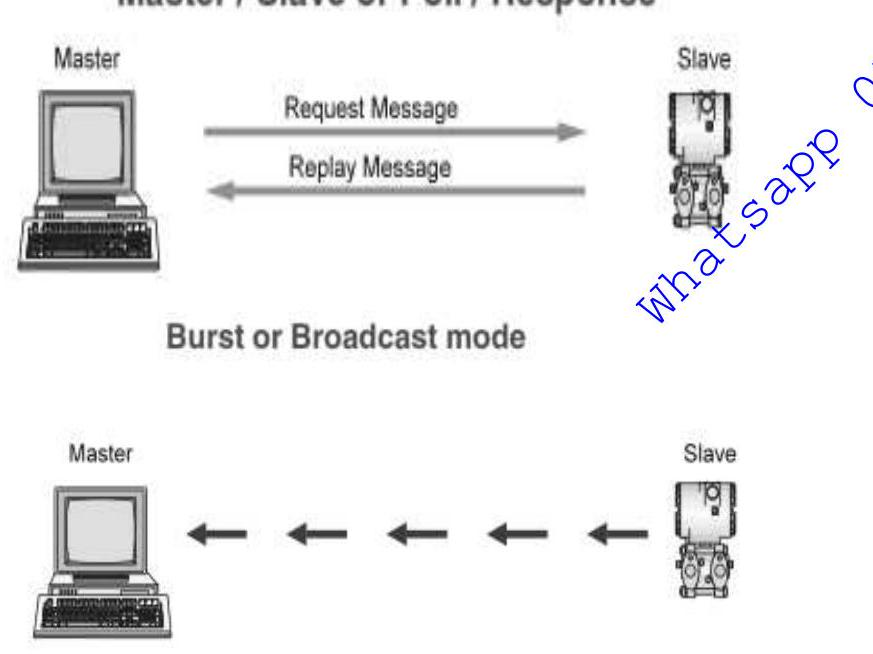
HART Communication Modes
(i) Master Slave Mode: This means that during normal operation, each slave (field device) communication is initiated by a master communication device. Two masters can connect to each HART loop. The primary master is generally a distributed control system (DCS), programmable logic controller (PLC), or a personal computer (PC). The secondary master can be a handheld terminal or another PC. Slave devices include transmitters, actuators, and controllers that respond to commands from the primary or secondary master.
(ii) Burst Mode: It enables faster communication (3-4 data updates per second). In burst mode, the master instructs the slave device to continuously broadcast a standard HART reply message (e.g., the value of the process variable). The master receives the message at the higher rate until it instructs the slave to stop bursting. Use of burst mode enables more than one passive HART device to listen to communications on the HART loop.
c) Cargo handling Company Limited is located in industrial area of Nairobi. In their neighbourhood are other companies dealing with motor rewinding and lathe machining. The company intends to implement a network in their offices and you have been consulted to advice them on the merits of each of the following types of cables in order to help them make informed decision on the right cable selection from the following:
i) UTP ii) STP iii) Fibre
What advice would you offer?
(i) UTP
PRO: Most flexible; cheapest cable (but requires expensive support components); easy to install; easy to add users; may be able to use existing phone cable if data grade
CON: Shortest usable cable length; susceptible to electrical interference; unsecure; generally not good for use between buildings
(ii) Shielded twisted pair (STP) is similar to UTP except it contains a copper braid jacket to 'shield' the wires from electrical interference. It can support transmissions over greater distances than UTP.
(iii) Fiber-Optic
PRO: Fastest transmission rate; not susceptible to electrical interference; secure; good for use between buildings
CON: Most expensive; relatively difficult to work with
(iv) Coaxial Cable
PRO: Flexible and easy to install; relatively good resistance to electronic interference; electronic support components are relatively inexpensive
CON: Short cable length; more expensive than UTP; unsecure; hard to change configuration; thinnet generally not good for use between buildings
d) With aid of a diagram, describe the mesh topology used in industrial networks and state its advantage.
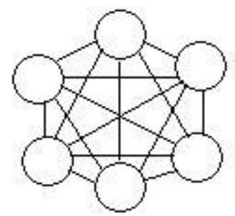
Mesh Topology
In a mesh network, devices are connected with many redundant interconnections between network nodes. In a true mesh topology every node has a connection to every other node in the network. There are two types of mesh topologies:
(i) Full mesh topology occurs when every node has a circuit connecting it to every other node in a network. Full mesh is very expensive to implement but yields the greatest amount of redundancy, so in the event that one of those nodes fails, network traffic can be directed to any of the other nodes. Full mesh is usually reserved for backbone networks.
(ii) Partial mesh topology is less expensive to implement and yields less redundancy than full mesh topology. With partial mesh, some nodes are organized in a full mesh scheme but others are only connected to one or two in the network. Partial mesh topology is commonly found in peripheral networks connected to a full meshed backbone.
Advantages
•Point-to-point line configuration makes identification and isolation of faults easy.
•Messages travel through a dedicated line, directly to the intended recipient; privacy and security are thus enhanced.
•Should a fault occur in a given link, only those communications between that specific pair of devices sharing the link will be affected.
•Dedicated links ensure that each connection carries its own data load, thereby preventing the sort of traffic problems that may arise in shared-link architectures.
Disadvantages
•The more extensive the network, in terms of scope or of physical area, the greater the investment necessary to build it will be, due, among other considerations, to the amount of cabling and the number of hardware ports it will require. For this reason, such networks are uncommon.
•Because every device must be connected to every other device, installation and reconnection are difficult.
📄2521/202 INDUSTRIAL CONTROL SYSTEMS - Oct/Nov 2012
Question 6
a) Draw a labeled block diagram of the internal architecture of a Programmable Logic Controller (PLC) and state the function of each block
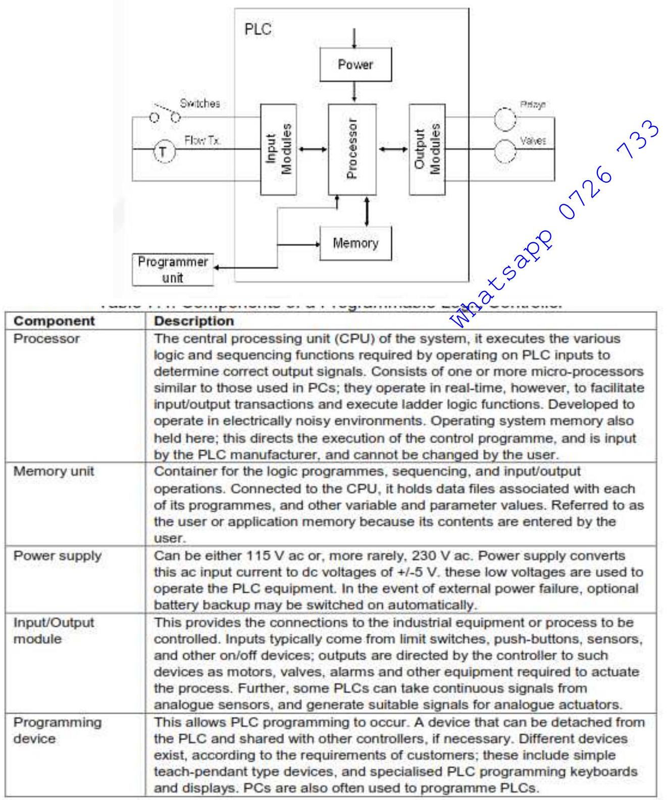
PLC Internal Architecture
b) Describe the following Programmable Logic Controller (PLC) system styles
i) Unitary ii) Modular iii) Rack Mounting
(i) Unitary: The Unitary PLC is typically the smallest and least expensive. It would be used in a small machine or fixed application such as overhead door controls or a stand-alone parts inspection system. They are not expandable so the application is limited to onboard I/O. There are, however, some very powerful units available with built in GSM, color screens, and web servers. Most have 1 or 2 analog I/O channels as well as a high speed input and pulse train output for simple motion control.
(ii) Modular: The Modular PLCs start with a processor with a few or no on-board I/O. They typically mount to a DIN rail and sometimes require a separate power supply. Additional I/O as well as specialty modules also snap onto the DIN rail and plug into the processor or adjacent module. Modular PLCs are used in applications where a higher I/O count is needed or when using specialty modules such as quadrature encoders, thermocouple inputs, etc. They are also useful in small applications that have options or “upgrades” available to the end user. Systems can be expanded (within certain limits) without adding additional rack space.
(iii)Rack Mounting PLCs are usually more expensive, expandable, and powerful than unitary or modular PLCs. The rack provides a power and communication backplane that greatly increases the communication rate between the processor and the modules as well as allowing some specialty modules to communicate with each other without the processor. In some brands, multiple processors can be in the same rack and share the inputs. Racks also allow for redundant processors for critical systems such as waste water pumps or fire control systems. The types of modules available for rack systems are far more extensive than modular systems. The number of available I/O points is also much higher in the rack systems. Around 1000 for some modular PLCs versus over 100,000 for the same brand of rack system
c) State any two programming languages used in PLC
Part 3 of IEC 61131 deals with programming languages and defines two graphical and two textual PLC programming language standards:
Ladder diagram (LD), graphical
Function block diagram (FBD), graphical
Structured text (ST), textual
Instruction list (IL), textual
Sequential function chart (SFC), has elements to organize programs for sequential and parallel control processing.
Question 7
a) With the aid of a block diagram, explain how a PLC process input from the sensors
Input scan: During the input scan, the current status of every input module is stored in the input image (memory) table, bringing it up-to-date. Thus all the status of the input devices (which in turn is connected to the input module) is updated in the input memory table.
Program scan: Following the input scan, the CPU enters its user program execution, or program scan. The execution involves starting at the program's first instruction, then moving on to the second instruction and carrying out its execution sequence. This continues to the last program instruction. Throughout the user-program execution, the CPU continually keeps its output image (memory) table up-to-date.
Output scan: During program scan, the output modules themselves are not kept continually up to date. Instead, the entire output image table is transferred to the output modules during the output scan which comes after the program execution. Thus the output devices are activated accordingly during the output scan.
b) i) Define a SCADA system
SCADA refers to the combination of telemetry and data acquisition. SCADA encompasses the collecting of the information, transferring it back to the central site, carrying out any necessary analysis and control and then displaying that information on a number of operator screens or displays. The required control actions are then conveyed back to the process.
ii) State any three advantages of using PLC in a SCADA system
The advantages of the PLC / DCS SCADA system are:
•Cost effective for controlling complex systems.
•Flexible and can be reapplied to control other systems quickly and easily.
•Computational abilities allow more sophisticated control.
•Trouble shooting aids make programming easier and reduce downtime.
•Reliable components make these likely to operate for years before failure.
•The computer can record and store a very large amount of data.
•The data can be displayed in any way the user requires.
•Thousands of sensors over a wide area can be connected to the system.
•The operator can incorporate real data simulations into the system.
•Many types of data can be collected from the RTUs.
•The data can be viewed from anywhere, not just on site.
The disadvantages are:
•The system is more complicated than the sensor to panel type.
•Different operating skills are required, such as system analysts and programmer.
•With thousands of sensors there is still a lot of wire to deal with.
•The operator can see only as far as the PLC.
c) Describe the following communication systems used in a SCADA system.
i) Ethernet ii) Device Net iii) Profibus
(i) Ethernet works on the principle of media access controlled by a collision detection mechanism. Each station is identified by a unique key, or MAC address, to ensure that every computer on an Ethernet network has a different address. This technology known as Carrier Sense Multiple Access with Collision Detection (CSMA/CD) ensures that only one station can transmit a message on the medium at a time. Successive Ethernet upgrades have given rise to the IEEE 802.3 standard which only defines the characteristics of the physical layers; the way the data accesses the network and the data frame must be defined by further layers.
(ii) DeviceNet is a network system used in the automation industry to interconnect control devices for data exchange. It uses Controller Area Network as the backbone technology and defines an application layer to cover a range of device profiles. Typical applications include information exchange, safety devices, and large I/O control networks.
(iii) PROFIBUS (Process Field Bus) is a standard for fieldbus communication which is a widely accepted international networking standard, commonly found in process control and in large assembly and material handling machines in automation technology.
•It supports single-cable wiring of multi-input sensor blocks, pneumatic valves, complex intelligent devices, smaller subnetworks (such as ASi), and operator interfaces.
•It is an open, vendor independent standard. It adheres to the OSI model, ensuring that devices from a variety of different vendors can communicate easily and effectively.
•The bus interfacing hardware is implemented on ASIC (Application Specific Integrated Circuit) chips produced by multiple vendors, and are based on RS-485 as well as the European EN50170 Electrical specification.
•ProfiBus uses 9-Pin D-type connectors (impedance terminated) or 12 mm round (M12-style) quick-disconnect connectors. The number of nodes is limited to 127.
•The distance supported is up to 24 km (with repeaters and fiber optic transmission), with speeds varying from 9600 bps to 12 Mbps . The message size can be up to 244 bytes of data per node per message ( 12 bytes of overhead for a maximum message length of 256 bytes), while the medium access control mechanisms are polling and token passing.
•ProfiBus supports two main types of devices, namely, masters and slaves.
•Master devices control the bus and when they have the right to access the bus, they may transfer messages without any remote request. These are referred to as active stations
•Slave devices are typically peripheral devices i.e. transmitters/sensors and actuators. They may only acknowledge received messages or, at the request of a master, transmit messages to that master. These are also referred to as passive stations.
There are two variations of PROFIBUS in use:
•PROFIBUS DP (Decentralized Peripherals) is used to operate sensors and actuators via a centralized controller in production (factory) automation applications.
•PROFIBUS PA (Process Automation) is used to monitor measuring equipment via a process control system in process automation applications. This variant is designed for use in explosion/hazardous areas (Ex-zone 0 and 1). The Physical Layer (i.e. the cable) conforms to IEC 61158-2, which allows power to be delivered over the bus to field instruments, while limiting current flows so that explosive conditions are not created, even if a malfunction occurs. The number of devices attached to a PA segment is limited by this feature. PA has a data transmission rate of 31.25 kbps .
d) Differentiate between centralized and distributive approaches used in designing a SCADA system.
There have been two main approaches to follow in designing the SCADA system:
•Centralized, where a single computer or mainframe performs all plant monitoring and all plant data is stored on one database which resides on this computer.
•Distributed, where the SCADA system is shared across several small computers (usually PCs).
Question 8
a) Describe the following network connection giving examples in each case.
i) LAN ii) Internet
(i) Local Area Network LAN -is a computer network that interconnects computers in a limited area such as a home, school, computer laboratory, or office building using network media.
(ii) Internet is a global system of interconnected computer networks that use the standard Internet protocol suite (TCP/IP) to serve several billion users worldwide. It is a network of networks that consists of millions of private, public, academic, business, and government networks, of local to global scope, that are linked by a broad array of electronic, wireless and optical networking technologies. The Internet carries an extensive range of information resources and services, such as the inter-linked hypertext documents of the World Wide Web (WWW), the infrastructure to support email, and peer-to-peer networks.
b) Using OSI reference model diagram indicate different encapsulation process at every peer-to peer communication layer of two Remote Terminal Unit (RTU) of a SCADA system starting with the top most down to the lowest layers.
(Diagram illustrating OSI encapsulation/decapsulation between two RTUs would be required here - not provided in text)
c) An Alarm system is used in conjunction with an automated bottling system in a milk bottling plant. A conveyer belt carries empty bottles that are to be filled with milk. The alarm goes off in any of the conditions occurs.
-Milk tank is empty and bottles are in conveyor belt.
-There are no bottles in the conveyer and there is milk in the tank.
-There is milk in the tank and bottles on the conveyor belt but electric power is off.
-There is no milk in the tank, no bottles on the conveyor belt and electric power is off.
iii) Write down a Boolean expression for the alarm system. iv) Implement this system using a PLC ladder diagram.
Tank with no -0, Bottles in conveyer -1
Tank with milk -1 , No bottle in conveyer -0
Tank with Milk - 1, Bottles in conveyer - 1, Power off - 0 => A.B.C̄ = X
Tank with Milk -0 , No Bottles in conveyer -0 , Power off 0 => Ā.B̄.C̄ = X
Expression: Ā.B + A.B̄ + A.B.C̄ + Ā.B̄.C̄ = X
(Ladder Diagram not provided in text)
📄2601/201 CONTROL SYSTEMS AND PROGRAMMABLE LOGIC CONTROLLERS - Oct/Nov 2012
Question 5
a) Define the term 'Programmable Logic Controller'
A Programmable Logic Controller (PLC) is an industrial computer control system that continuously monitors the state of input devices and makes decisions based upon a custom program, to control the state of devices connected as outputs.
b) State two advantages of Programmable Logic Controller
Cost effective for controlling complex systems.
Flexible and can be reapplied to control other systems quickly and easily.
Computational abilities allow more sophisticated control.
Trouble shooting aids make programming easier and reduce downtime.
Reliable components make these likely to operate for years before failure.
c) With the aid of a block diagram, describe the construction of a Programmable Logic Controller
In the figure, the heart of the "PLC" is in the center, i.e., the Processor or CPU (Central Processing Unit).
•The CPU regulates the PLC program, data storage, and data exchange with I//O modules.
•Input and output modules are the media for data exchange between field devices and CPU. It tells CPU the exact status of field devices and also acts as a tool to control them.
•A programming device is a computer loaded with programming software, which allows a user to create, transfer and make changes in the PLC software.
•Memory provides the storage media for the PLC program as well as for different data.
OR
•CPU or processor: The main processor (Central Processing Unit or CPU) is a microprocessor-based system that executes the control program after reading the status of field inputs and then sends commands to field outputs.
•I/O section: I/O modules act as "Real Data Interface" between field and PLC CPU. The PLC knows the real status of field devices, and controls the field devices by means of the relevant I/O cards.
•Programming device: A CPU card can be connected with a programming device through a communication link via a programming port on the CPU.
•Operating station: An operating station is commonly used to provide an "Operating Window" to the process. It is usually a separate device (generally a PC), loaded with HMI (Human Machine Software).
Question 6
a) Define the term 'Computer networking'
Computer networking is the interconnection, as over communication lines, of computer systems. This involves connecting computers and peripherals using pieces of equipment; switches and routers etc to enable the devices that are connected to your network to communicate with each other, as well as with other networks.
b) Describe the following types of computer networks
i) LAN ii) WAN iii) MAN
(i) Local Area Network LAN - These types of computer networks connect network devices over a relatively short distance. Quite often, a networked office building, home or school contains a single LAN although it is normal to come across a building that contains a few small LANs. On a few occasions, a LAN may also span over a group of nearby buildings. Such computer networks are usually owned by one organization.
(ii) Wide Area Network WAN - As the name suggests, a WAN spans over a large physical distance. It may be regarded as a collection of LANs dispersed over a geographical area. The internet is a very good example of a WAN. LANs are connected to a WAN through a device referred to as a router. In IP networking, both the LAN and WAN addresses are maintained by the router. Most WANs exist under distributed or collective ownership and management and unlike the LANs, are not necessarily owned by one organization.
(iii) Wireless Local Area Network WLAN - These types of computer networks refer to LANs that are based on Wi-Fi wireless network technology.
(iv) Metropolitan Area Network MAN - This is a network that spans over a physical area like a city that is smaller than a WAN but larger than a LAN. Quite often, such computer networks are owned and operated by single entities such as government bodies or large corporations
c) With the aid of diagram, explain the following topologies:
i) Bus ii) Star
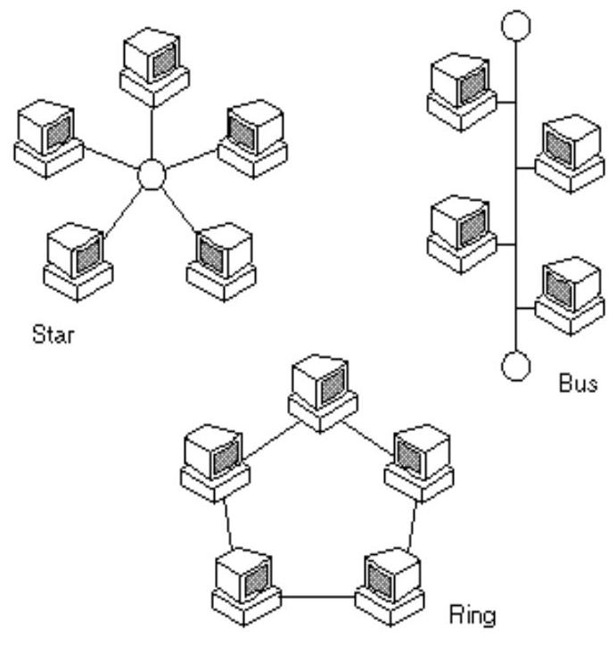
Network Topologies
Bus Topology
A bus topology consists of a main run of cable with a terminator at each end. All nodes (file server, workstations, and peripherals) are connected to the linear cable.
Advantages of a Bus Topology
•Easy to connect a computer or peripheral to a linear Bus.
•Requires less cable length than a star topology.
Disadvantages of a Bus Topology
•Entire network shuts down if there is a break in the main cable.
•Terminators are required at both ends of the backbone cable.
•Difficult to identify the problem if the entire network shuts down.
•Not meant to be used as a stand-alone solution in a large building.
Star Topology
A star topology is designed with each node (file server, workstations, and peripherals) connected directly to a central network hub, switch, or concentrator. Data on a star network passes through the hub, switch, or concentrator before continuing to its destination. The hub, switch, or concentrator manages and controls all functions of the network. It also acts as a repeater for the data flow. This configuration is common with twisted pair cable; however, it can also be used with coaxial cable or fiber optic cable.
Advantages of a Star Topology
•Easy to install and wire.
•No disruptions to the network when connecting or removing devices.
•Easy to detect faults and to remove parts.
Disadvantages of a Star Topology
•Requires more cable length than a linear topology.
•If the hub, switch, or concentrator fails, nodes attached are disabled.
•More expensive than linear bus topologies because of the cost of the hubs, etc.
Ring Network Topology
A local-area network (LAN) whose topology is a ring. That is, all of the nodes are connected in a closed loop. Messages travel around the ring, with each node reading those messages addressed to it. One of the advantages of ring networks is that they can span larger distances than other types of networks, such as bus networks, because each node regenerates messages as they pass through it.
Mesh network Topology
The mesh network topology employs either of two schemes, called full mesh and partial mesh. In the full mesh topology, each workstation is connected directly to each of the others. In the partial mesh topology, some workstations are connected to all the others, and some are connected only to those other nodes with which they exchange the most data.
Tree Network Topology
The tree network topology uses two or more star networks connected together. The central computers of the star networks are connected to a main bus. Thus, a tree network is a bus network of star networks.
Question 7
a) Describe 'SCADA' system
A SCADA (or supervisory control and data acquisition) system means a system consisting of a number of remote terminal units (or RTUs) collecting field data connected back to a master station via a communications system. The master station displays the acquired data and also allows the operator to perform remote control tasks.
b) Define the following terms in reference to SCADA
i) Human machine Interface ii) Programmable Logic Controller
(i) A human-machine interface or HMI is the apparatus or device which presents processed data to a human operator, and through this, the human operator monitors and controls the process. The HMI of a SCADA system is where data is processed and presented to be viewed and monitored by a human operator. This interface usually includes control where the individual can interface with the SCADA system
(ii) Programmable logic controller (PLCs) used as field devices because they are more economical, versatile, flexible, and configurable than special-purpose RTUs.
c) Explain the functions of the following parts of a SCADA system:
i) Remote Terminal unit ii) Supervisory station
(i) Remote Terminal Unit (RTU):- RTU is a device installed at a remote location that collects data, codes the data into a format that is transmittable and transmits the data back to a central station, or master (supervisory system). An RTU also collects information from the master device and implements processes that are directed by the master
(ii) A supervisory (computer) system/ Master Terminal Unit (MTU):- gathering (acquiring) data on the process and sending commands (control) to the process. This is the servers and software responsible for communicating with the field equipment (RTUs, PLCs, etc), and then to the HMI software running on workstations in the control room, or elsewhere.
d) With the aid of a ladder program and a process control figure, explain how a converter can be used in a machine to direct 6 products to a packaging box and 12 products to another box simultaneously.
The control of a machine which is required to direct 6 products along one path for packaging in a box and then 12 products along another path the packaging in another box.
A deflector plate might be controlled by a photocell sensor which gives an output every time a product passes it. Thus the number of pulse from the sensor has to be counted and used to control the deflector.
On rung 1, each time the photo sensor is triggered it causes C1's count to increase. When C 1, the six product counter, reaches six it causes the deflector to activate.
On rung 3, while the deflector is activated C 2, the 12 products counter, and starts counting the products. On rung 4, after 12 products are counted the counters are reset and the process starts again.
The process can also be reset at anytime using the start button.
a) Explain how fault-finding is carried out in PLC systems
With any PLC controlled plant, by far the greater percentage of the faults are likely to be with sensors, actuators and wiring rather than within the PLC itself.
Of the faults within the PLC, most are likely to be in the input/output channels or power supply rather than in the CPU.
The actual fault finding starts once the actual status has been established and compared with the required status. This comparison frequently leads to the discovery of the error source, if the fault is visible (e.g. mechanical damage to a signal generator), audible (e.g. leakage on a valve), detectable by smell (e.g. cable burnt out). If this is not the case, the fault can only be found and eliminated by means of a systematic procedure.
Many PLCs provide built-in fault analysis procedures which carry out self-testing and display fault codes, with possibly a brief message, which can be translated by looking up the code in a list to give the source of the fault and possible methods of recovery. For example, the fault code may indicate that the source of the fault is in a particular module with the method of recovery given as replace that module or perhaps switch the power off and then on.
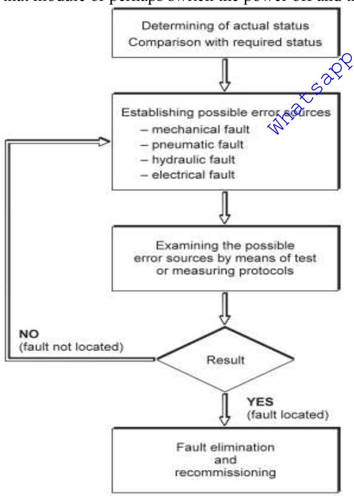 Determine actual status -> Compare with required status -> Establish possible errors (mechanical, pneumatic, hydraulic, electrical) -> Examine possible error sources -> Result (Fault located? Yes/No) -> If Yes, Fault elimination -> End. If No, loop back or report." class="content-image" style="max-width: 400px;">
PLC Fault Finding Flowchart
b) Describe the following fault detection techniques in reference to PLCs:
i) time checks ii) Replication Fault Detection Techniques
(i) Timing checks: The term watchdog is used for a timing check that is carried out by the PLC to check that some function has been carried out within the normal time. If the function is not carried out within the normal time then a fault is assumed to have occurred and the watchdog timer trips, setting off an alarm and perhaps closing down the PLC. As part of the internal diagnostics of PLCs, watchdog timers are used to detect for faults. The watchdog timer is preset to a time slightly longer than the scan time would normally be. They are then set at the beginning of each program scan and if the cycle time is as normal they do not time out and are reset at the end of a cycle ready for the next cycle. However, if the cycle time is longer than it would normally be, the watchdog timer times out and indicate that the system has a fault. Time checks can also be built into the ladder logic program. This is where additional ladder rungs might be includes so that when a function starts a timer is started. If the function does not complete when the timer finishes a fault is signaled.
(ii) Last output set: This technique involves the use of status lamps to indicate the last output that has been set during a process which has come to a halt. Such lamps are built into the program so that as each output occurs a lamp comes on. The lamps on thus indicate which outputs are occurring. The program has to be designed to turn off previous status lamps and turn on a new status lamp as each new output is turned on.
(iii)Replication: Where there is concern regarding safety in the case of a fault developing, checks may be constantly used to detect faults. One technique is replication checks which involves duplicating, i.e. replicating, the PLC system. This could mean that the system repeats every operation twice and if it gets the same result it is assumed there is no fault. This procedure can detect transient faults. A more expensive alternative is to have duplicate PLC systems and compare the results given by the two systems. In the absence of a fault the two results should be the same, a fault showing up as a difference.
(iv) Expected value checks: Software errors can be detected by checking whether an expected value is obtained when a specific input occurs. If the expected value is not obtained then a fault is assumed to be occurring.
c) i) Define the term calibration with reference to PLCs.
Calibration is the process of checking PLC/field devices and making sure that values used in measurements remain at standard points. It is the process of verifying the PLC and I/O devices work and performance within a set of specifications. Calibration is defines as determination of the experimental relationship between the quantity being measured and the output of the device which measures it; where the quantity measured is obtained through a recognized standard of measurement. There are two fundamental operations involved in calibrating any instrument:
-Testing the instrument to determine its performance,
-Adjusting the instrument to perform within specification.
ii) Describe the following characteristics of calibration:
I) Tolerance II) Accuracy
Tolerance: Permissible deviation from a specified value; may be expressed in measurement units, percent of span, or percent of reading.
Accuracy: The ratio of the error to the full scale output or the ratio of the error to the output, expressed in percent span or percent reading, respectively.
d) Explain how zero and span errors are corrected in measuring instruments
Zero and span errors are corrected by performing a calibration. Most instruments are provided with a means of adjusting the zero and span of the instrument, along with instructions for performing this adjustment.
-The zero adjustment is used to produce a parallel shift of the input-output curve.
-The span adjustment is used to change the slope of the input-output curve.
-Linearization error may be corrected if the instrument has a linearization adjustment. If the magnitude of the nonlinear error is unacceptable and it cannot be adjusted, the instrument must be replaced.
📄2601/201 CONTROL SYSTEMS AND PROGRAMMABLE LOGIC CONTROLLERS - Oct/Nov 2011
Question 5
a) i) Define a programmable Logic Controller (PLC's)
A programmable logic controller (PLC) is a microcomputer-based controller that uses stored instructions in programmable memory to implement logic, sequencing, timing, counting, and arithmetic functions through digital or analogue input/output modules, for controlling machines and processes. PLCs are used in a large variety of scenarios, both in process industries and discrete manufacturing.
ii) Distinguish between supervisory control and data acquisition and distributed control system
•A DCS is a process-oriented system and it treats the control of the process, (the chemical plant, refinery or whatever) as its main task, and it presents data to operators as part of its job.
•A SCADA system is data gathering oriented; and the control center and operators are its focus. However, the remote equipment is merely there to collect the data - though it may also do some very complex process control.
•A DCS operator station is intimately connected with its input/output signals (I/O) through local wiring, communication buses (e.g. Field Bus, networks) etc. When the DCS operator wants to see information he/she usually makes a request directly to the field I/O and gets a response. Field events can directly interrupt the system and advise the operator.
•A SCADA system must continue to operate when field communications have failed. The 'quality' of data shown to the operator is an important facet of SCADA system operation. SCADA systems often provide special 'event' processing mechanisms to handle conditions that occur between data acquisition periods.
There are many other differences, but they tend to involve a lot of detail. The underlying points are:
•A SCADA system needs to transfer secure data and control signals over a potentially slow, unreliable communications medium, and needs to maintain a database of 'last known good values' for prompt operator display. It frequently needs to do event processing and data quality validation. Redundancy is usually handled in a distributed manner.
•A DCS is always connected to its data source, so it does not need to maintain a database of 'current values'. Redundancy is usually handled by parallel equipment, not by diffusion of information around a distributed database.
b) With the aid of a diagram, explain how PLC's can be used to control water level in a tank
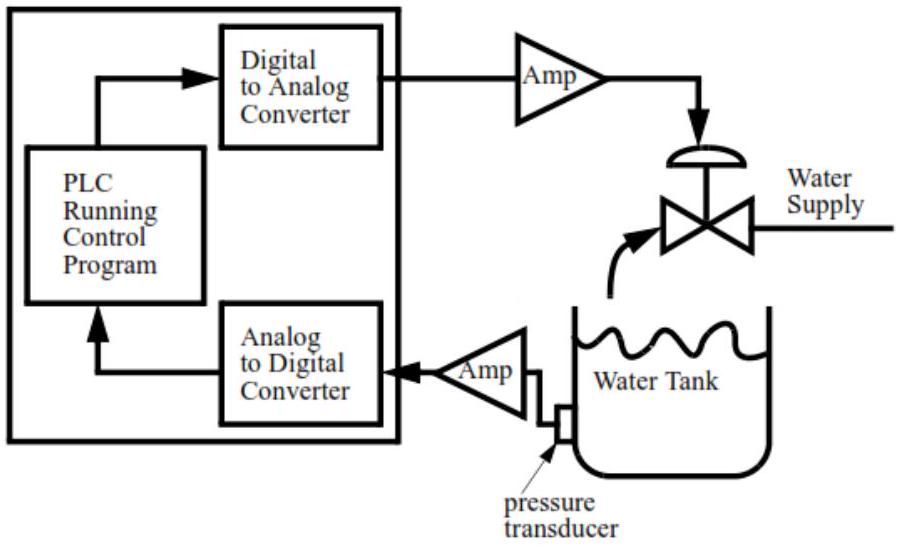
PLC Water Level Control
(Explanation of ladder logic/control strategy not provided in MMD)
c) Explain why user interface is necessary in PLC's
A user interface is the system by which people (users) interact with a machine. The user interface includes hardware (physical) and software (logical) components. User interfaces exist for various systems, and provide a means of:
•Input, allowing the users to manipulate a system
•Output, allowing the system to indicate the effects of the users' manipulation
Question 6
i) Define ladder logic control system
It is a control system which uses ladder logic to manage, command, directs or regulates the behavior of other device(s) or system(s).
ii) With aid of a labeled block diagram, explain the hardware architecture of a SCADA system
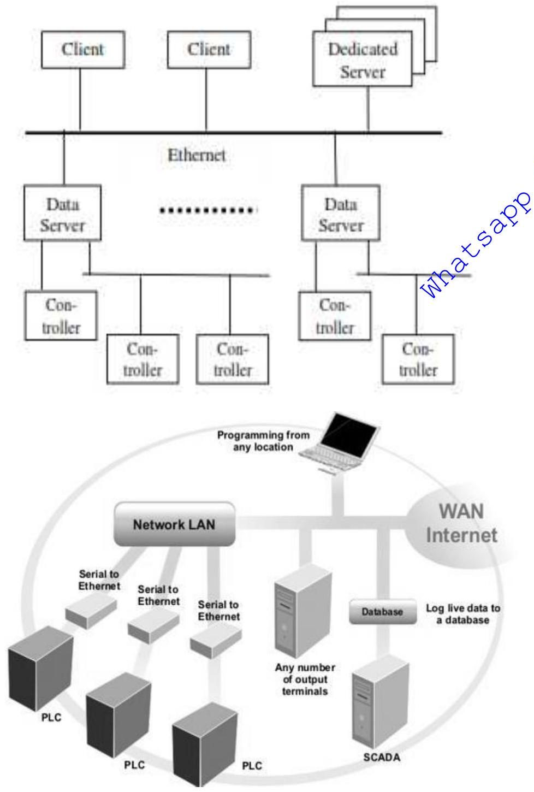
SCADA Hardware Architecture
•Basic layers in a SCADA system can be classified in two parts generally: the "client layer" which caters for the man machine interaction and the "data server layer" which handles most of the process data control activities. The data servers communicate with devices in the field through process controllers.
•Process controllers, e.g. PLCs, are connected to the data servers either directly or via networks or fieldbuses. Data servers are connected to each other and to client stations via an Ethernet LAN.
•The RTU connects to physical equipment. Typically, an RTU converts the electrical signals from the equipment to digital values such as the open/closed status from a switch or a valve, or measurements such as pressure, flow, voltage or current. By converting and sending these electrical signals out to equipment the RTU can control equipment, such as opening or closing a switch or a valve, or setting the speed of a pump.
•Supervisory Station; The term "Supervisory Station" refers to the servers and software responsible for communicating with the field equipment (RTUs, PLCs, etc), and then to the HMI software running on workstations in the control room, or elsewhere.
•In smaller SCADA systems, the master station may be composed of a single PC. In larger SCADA systems, the master station may include multiple servers, distributed software applications, and disaster recovery sites.
•To increase the integrity of the system the multiple servers will often be configured in a dual-redundant or hot-standby formation providing continuous control and monitoring in the event of a server failure.
b i) State and explain four user configurable open system (UCOS) components
UCOS is a control system that employs object-oriented techniques at every level of its system architecture. It includes a number of subsystems which segment the functionality of UCOS. This includes an Engineering Workstation Subsystem, an Operator Workstation Subsystem, and a Field Control Unit (FCU) Controller Subsystem. The subsystems communicate via a Control Network.
•Engineering Workstation (EWS) used for project development. The EWS is the development tool where control schemes are configured then downloaded to the OWS, FCU, and SDS. The entire project is configured using a single integrated tool based on graphical Windows standards. Graphical techniques are also used to define the logical relationships among the devices in a process area. Project configuration begins by defining the system architecture: workstations, field control units (FCUs), I/O, networking, etc. Graphical techniques are also used to define the logical relationships among the control elements for multiple devices.
•Operator Workstation (OWS) for operator interface. This is used to monitor and control the process. It uses the project screens created during project development and animates them based on real-time data received from field control units and field data servers. Authorized operators can monitor detailed activities for many types of devices and send commands using standard faceplate command windows and group displays.
•Field Control Unit (FCU) for control logic execution and direct scanning of I/O. The FCU provides I/O services by monitoring and controlling I/O across standard networks and data highways. The FCU can provide simultaneous support for multiple vendors' I/O and I/O networks. The variety of platform and form-factor options supported by the FCU allows incorporation of distributed, distinct I/O subsystems into common control strategies.
•Control Network. System supports redundant and non-redundant fiber optic and Ethernet local networks using the TCP/IP networking protocol for standardized, advanced application connectivity. The LAN/WAN can be extended to other sites inside or outside the plant using such remote communications technologies as satellite, radio, microwave, and dial-up running such standard protocols as TCP/IP, Modbus, OPC, DDE
•I/O Subsystem supporting I/O from all industry standard suppliers. The same logic can be solved to manipulate different I/O subsystems from different manufacturers without having to change any of the programming or operational parameters of the configured system.
•SCADA Data Server (SDS) for interfacing data from intelligent devices, such as PLCs, Fieldbus technologies, RTUs, PLC I/O, and other third-party devices
•Process Historical Archiver (PHA) for storing and retrieving historical data collected by the FCU, SDS or any other intelligent device in the system
•microFCU: is a small, low-powered PLC that executes sequential and regulatory logic and directly scans onboard I/O. It can replace RTUs at a significant reduction in cost and power consumption plus it can provide local intelligent control of devices, which RTUs can't do.
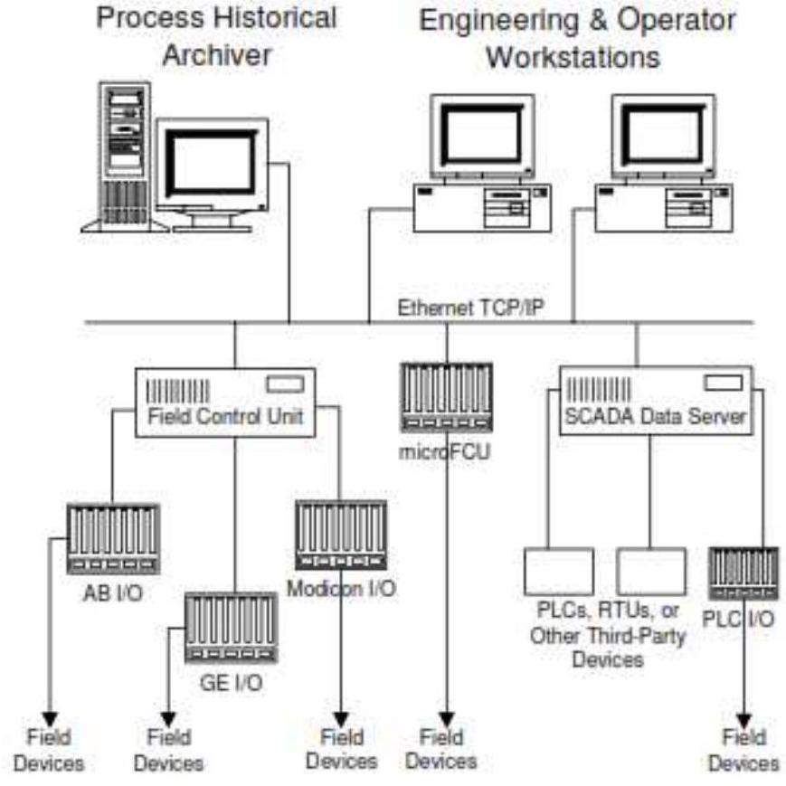
UCOS Architecture Example
ii) Distinguish between data hacking and cracking
Hacking, is the act of stealing personal or private data, without the owner's knowledge or consent, it could also include other things like stealing passwords, creating a bot net, or pretty much any act that breaches someone's privacy, without their knowledge, or consent. Hacking is any technical effort to manipulate the normal behavior of network connections and connected systems
Cracking is where edit a program's source code, or you could create a program, like a key generator (more commonly known as a 'keygen'), patch, or some sort of application that tricks an application in to thinking that a particular process has occurred.
Question 7
a) i) Define the term computer network
A computer network or data network is a telecommunications network that allows computers to exchange data. In computer networks, networked computing devices (network nodes) pass data to each other along data connections. The connections (network links) between nodes are established using either cable media or wireless media. The best-known computer network is the Internet. A computer network is a group of computer systems and other computing hardware devices that are linked together through communication channels to facilitate communication and resource-sharing among a wide range of users. Networks are commonly categorized based on their characteristics.
ii) Distinguish between internet and Ethernet
•Ethernet is a local area network used to connect computers near one another. Ethernet is a family of frame-based computer networking technologies for local area networks (LANs). The name comes from the physical concept of the ether. Ethernet is a set of standards for physically connecting computers in a local area network. In terms of OSI network layers, Ethernet provides only the physical layer and the data link layer. It defines a number of wiring and signaling standards for the Physical Layer of the OSI networking model, through means of network access at the Media Access Control (MAC) /Data Link Layer, and a common addressing format. Ethernet is standardized as IEEE 802.3.
•Internet is a global network of interconnected computers, enabling users to share information along multiple channels. Typically, a computer that connects to the Internet can access information from a vast array of available servers and other computers by moving information from them to the computer's local memory. The same connection allows that computer to send information to servers on the network; that information is in turn accessed and potentially modified by a variety of other interconnected computers
iii) Describe the following cables used in networking
I) Coaxial cable II) Fibre optic cable
Networking cables are used to connect one network device to other network devices or to connect two or more computers to share resources. Different types of network cables like Coaxial cable, Optical fiber cable, Twisted Pair cables are used depending on the network's topology, protocol and size. The devices can be separated by a few meters (e.g. via Ethernet) or nearly unlimited distances (e.g. via the interconnections of the Internet).
Twisted pair cabling is a form of wiring in which pairs of wires (the forward and return conductors of a single circuit) are twisted together for the purposes of canceling out electromagnetic interference (EMI) from other wire pairs and from external sources. This type of cable is used for home and corporate Ethernet networks. There are two types of twisted pair cables: shielded, unshielded. STP is commonly used in Token Ring networks and UTP in Ethernet networks where it is referred to as "10baseT and above." Transmission rates vary between 10-1000 Mbps.
Fiber-optic cable consists of a thin cylinder of glass surrounded by glass cladding, encased in protective outer sheath. Fiber-optic cable is very fast ( 100 -1000 Mbps ). It can transmit over long distances ( 2 km+ ) but is expensive.
Coaxial cable has a single copper conductor at its center. A plastic layer provides insulation between the center conductor and a braided metal shield. The metal shield helps to block any outside interference. Coaxial cable comes in two versions: Thinnet and Thicknet. Thinnet is about 1/4 inch in diameter and is very flexible and easy to work with.
In contrast, Thicknet is about 1/2 inch in diameter and not very flexible. Coax transmits at 10 Mbps .
b) With the aid of diagram, describe the following types of topologies
i) Star ii) Bus
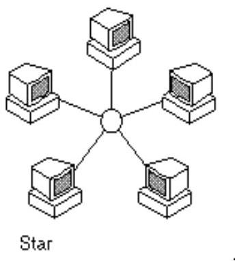
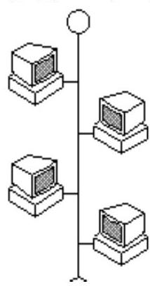
Star and Bus Topologies
Star topology: This is the Ethernet topology, the most common at management and shop floor levels. It has the advantage of being very flexible to run and repair. The end stations are linked together via an intermediate device (repeater, switch). Failure of a node does not prevent the network as a whole from working, though the intermediate device linking the nodes together is a point of weakness.
Bus topology: This is one of the simplest layouts; all the elements are wired together along the same transmission line. The word bus refers to the physical line. This topology is easily implemented and the failure of a node or element does not prevent the other devices from working. Machine and sensor level networks, otherwise known as field buses, use this system. The bus topology is implemented by linking devices together in a chain or to the main cable via a connection box (TAP)
Question 8
a) Define the following network components:
i) Repeater ii) Switch iii) Bridge
•Repeater: a device which amplifies or regenerates digital signals received while sending them from one part of a network into another. It works on OSI layer 1.
•Switch: a device that allocates traffic from one network segment to certain lines (intended destination(s)) which connect the segment to another network segment. Unlike a hub, a switch splits the network traffic and sends it to different destinations rather than to all systems on the network. It works on OSI layer 2.
•Bridge: a device that connects multiple network segments along the data link layer. It separates two or more network segments within one logical network (e.g. a single IP-subnet). It works on OSI layer 2.
•Hub: a device that connects multiple Ethernet segments, making them act as a single segment. When using a hub, every attached device shares the same broadcast domain and the same collision domain. Therefore, only one computer connected to the hub is able to transmit at a time. Depending on the network topology, the hub provides a basic level 1 OSI model connection among the network objects (workstations, servers, etc.). It provides bandwidth which is shared among all the objects, in contrast to switches, which provide a connection between individual nodes. It works on OSI layer 1.
b) i) State three factors which necessitate calibration
Calibration is defined as "a test during which known values of measure and are applied to the transducer and corresponding output readings are recorded under specified conditions." The definition includes the capability to adjust the instrument to zero and to set the desired span. There are three main reasons for having instruments calibrated:
•To ensure readings from an instrument are consistent with other measurements.
•To determine the accuracy of the instrument readings.
•To establish the reliability of the instrument i.e. that it can be trusted.
ii) Describe the following communication devices:
I) RS232 II) HART
•RS-232 is a standard communication protocol for linking computer and its peripheral devices to allow serial data exchange. It is an interface between Data terminal equipment (DTE) and Data communication equipment (DCE). It defines the voltage for the path used for data exchange between the devices. It specifies common voltage and signal level, common pin wire configuration and minimum, amount of control signals.
•HART (Highway Addressable Remote Transducer) is a master-slave communication protocol, which means that during normal operation, each slave (field device) communication is initiated by a master communication device. Two masters can connect to each HART loop. The primary master is generally a distributed control system (DCS), programmable logic controller (PLC) , or a personal computer (PC). The secondary master can be a handheld terminal or another PC. Slave device include transmitters, actuators, and controllers that respond to commands from the primary or secondary master.
c) With aid of a diagram explain the importance of calibration of equipment and products.
(Importance is listed in b(i), diagram not provided for this specific point)
•To ensure readings from an instrument are consistent with other measurements.
•To determine the accuracy of the instrument readings.
•To establish the reliability of the instrument i.e. that it can be trusted.
d) Explain how CAN works
CAN (Controller Area Network) is a serial bus based on a publisher/subscriber model in which a publisher sends a message to subscribers. CAN was developed with broadcast architecture.
The sender (publisher) sends the message with an identifier. The recipients (subscribers) filter messages from the bus based on their send identifier.
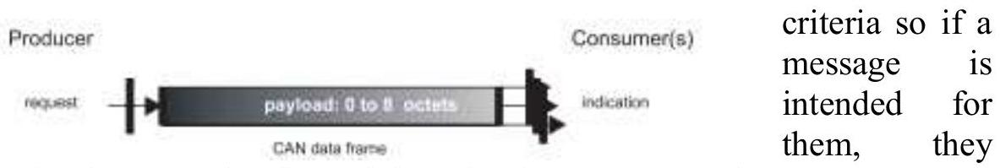
CAN Bus Publisher/Subscriber Model (Push)
read and process it. The recipient then becomes a sender.
The diagram shows the push (send) mode of the publisher/subscriber model. CAN also support its pull (receive) mode.
A client can send a message based on a remote transmission request (RTR), which is a CAN frame with RTR flags (status bits). When the producer receives such a request, it transmits the related answer.
In a broadcast architecture, the network nodes can transmit at the same time. CAN have 2 mechanisms to deal with this: first, a sender surveys the communication artery to check if another node is already transmitting.
If the artery is free, the node starts to transmit. Several nodes can start transmitting but never at the same time. This problem is overcome by a priority system.
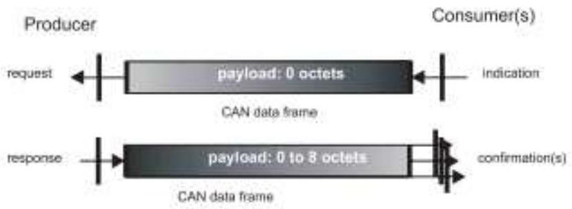
CAN Bus Publisher/Subscriber Model (Pull/RTR)